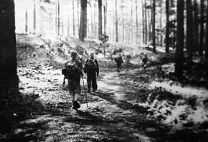

Nhưng “tiểu tư sản” là gì nhỉ? Lâu rồi, ít nghe ai nhắc ba từ này, có lẽ vì những người hay gán cho người khác ba từ đó đã “bỏ qua giai đoạn tiểu tư sản” để tiến thẳng lên “tư sản” cả rồi!
☆
...Ðoàn có hơn năm mươi bác sĩ, trong đó có một số mới ra trường, có bảy anh chàng bên Ðiện ảnh, là Hiến, Sửu, Thủy, Trường, Tâm, Trần Thế Dân và Cao Duy Thảo. Trường và Tâm là người miền Nam.
Về sau Trường hồi chánh, lên đài nói gì gì...
Mình còn nghe tiếng Trường từ trên máy bay trực thăng ra rả gọi tên bọn mình, tên anh em “ Hãy hồi chánh, về với chính nghĩa quốc gia... ”.
Câu chuyện dài và buồn. Trước khi đi B anh ấy cũng có nhiều chuyện, nói ra thì lạc đề. Khi tập trung ở 51 Trần Hưng Ðạo để lên Hòa Bình, chúng mình ngồi trong chiếc “com-măng-ca đít vuông” (loại xe chỉ huy của quân đội Liên xô với cái tên Việt quen thuộc một thời), cô vợ Trường trẻ và xinh đẹp cứ níu giữ không cho xe đi. Trường bình thản vỗ vai, vuốt má vợ và nói: “ Thôi em quay về đi .”
Thế rồi xe rồ máy đi...
Hình ảnh ấy đọng lại trong mình sâu sắc lắm, ghê gớm lắm. Sau năm 75 mình vào Nam nhiều lần tìm Trường nhưng không thấy.
Anh em báo chí, văn nghệ, điện ảnh đều có người “hồi chánh”, có cả anh Lê Bá Huyến học ở Nga về, phó đạo diễn phim “Nổi Gió”.
...Sau cả tháng trời được ăn ngon, tập đeo nặng trèo núi ban đêm, chúng mình xuất phát từ Hòa Bình, ngày đi đêm nghỉ, dọc đường cùng nấu cơm cùng ăn với nhau. Trong đoàn có cả cô bác sĩ nhãn khoa Ðặng Thùy Trâm, sau trở nên nổi tiếng.

...chúng mình xuất phát từ Hòa Bình, ngày đi đêm nghỉ...
(Thủy là người chống gậy đi sau cùng)
Trên con đường vòng veo cheo leo đi vào trong ấy, có rất nhiều chuyện nhưng nổi bật hơn cả là chuyện về Ðặng Thùy Trâm. Anh em đi trong đoàn là những trí thức trẻ tuổi, vui vẻ trong sáng. Chúng mình thân thiết quí mến nhau lắm.
Trên đường đi, khi qua đất Lào, mình thấy trong bụng không bình thường. Mình đau dạ dày từ lâu rồi, nếu khai là đau dạ dày thì bị qui tội về tư tưởng, là “B quay”. Mình cắn răng chịu đựng không dám nói cũng chẳng tâm sự với ai cả và đã qua được nhiều đoạn đường. Ðang đi trên đường bằng phẳng, chẳng phải leo trèo gì bỗng dưng đau thắt trong bụng, mình ngồi thụp xuống bên đường gỡ ba lô ra. Dân, Sửu, Hiến, Trâm... đều đến bên động viên. Mình bảo các bạn cứ đi trước đi, mình nghỉ chút rồi sẽ theo sau. Mình đau quá lăn ra bãi cỏ, không thể ngồi được.
Ông phụ trách đoàn, người khu 5, tên là Chuyên, hơn chúng mình khoảng chục tuổi. Thấy mình lăn lộn đau đớn, ông ta nói mát:
- Ôi dào, đang đi vào chỗ chết thì đau cũng còn nhiều kiểu đau lắm!
Thùy Trâm nghiêm mặt nói:
- Anh là thầy thuốc mà ăn nói thế à?
Trâm bảo mình nằm xuống, vén áo mình lên bôi cồn rồi tiêm ba mũi Atropine quanh vùng rốn. Atropine chỉ là thuốc gây tê để giảm đau thôi.
...Sau hơn hai tháng rong ruổi, trèo đèo lội suối, vào đến căn cứ trên rừng của Ban tuyên huấn khu 5, một vùng núi cao Quảng Nam giáp ranh với Lào.
Trâm phải đi tiếp, bọn mình ở lại.
Mọi người trong đoàn của Trâm đã đi xa lắm rồi, Trâm cứ lừng chừng nán lại. Dân, mình và mấy bạn thân thiết với nhau suốt dọc đường đi đều quây quần lại chia tay Trâm.
Từ đó chẳng bao giờ gặp lại nữa, cũng chẳng bao giờ thư từ được cho nhau, nhưng trong ý nghĩ chúng mình vẫn nhớ mãi hình ảnh Trâm, người con gái gốc Huế dịu hiền, người bạn tốt...
☆
Thế rồi chiến tranh qua đi, cuốn “Nhật Ký Ðặng Thùy Trâm” ra đời.
Vì chúng mình đã thân quen với Trâm trên đường vào Nam cho nên rất quan tâm đến sự kiện này và có ý nghĩ của riêng mình.
Không biết ai là người đầu tiên nói rằng khi những người lính phía bên kia giết Ðặng Thùy Trâm và lấy cuốn nhật ký của chị, một người lính Mỹ định đốt cuốn nhật ký, viên hạ sĩ quan quân đội cộng hòa Trung Hiếu đã nói: “ Ðừng đốt, trong đó đã có lửa... ”.
Có thật anh ta nói câu ấy không? Hơi khó tin, cái câu chữ sặc mùi chính trị. Vì trong lúc bom rơi đạn nổ ai đã kịp đọc để biết trong đó có gì... Một viên trung sĩ, như sau này được biết là người không thích giao tiếp, một người rất kiệm lời mà có thể nói một câu mỹ miều đầy tính sân khấu ấy chăng, nhất là giữa chiến trường ác liệt?
Ai đã đọc cuốn nhật ký với những câu chữ mộc mạc chân thành của một người con gái hiền lành ấy sẽ thấy chỉ có dạt dào tâm sự, đầy ắp nỗi niềm. Nếu có lửa thì là do ai đó, có thể là một người mê cải lương đưa vào mà thôi.
Khi Ðặng Thùy Trâm được phong thành anh hùng, hàng ngàn hàng vạn bài báo tung ra, thì Thanh Thảo - nhà thơ quê Quảng Ngãi, nơi Trâm ngã xuống nhìn người con gái từ một góc độ khác:
Thanh Thảo viết:
Tôi đã không cầm được nước mắt khi đọc dòng cuối bức thư chị Ðặng Thùy Trâm gửi cho chị Khiêm - người chị kết nghĩa - thư đề ngày 20-5-1970: “ Nếu mai này khi đất nước thanh bình chị trở về vắng bóng em, chị có nhớ đứa em tiểu tư sản này không? Hãy đốt cho em một nén hương chị nhé...”.
Nhưng “tiểu tư sản” là gì nhỉ? Lâu rồi, ít nghe ai nhắc ba từ này, có lẽ vì những người hay gán cho người khác ba từ đó đã “bỏ qua giai đoạn tiểu tư sản” để tiến thẳng lên “tư sản” cả rồi! Bây giờ thì tôi đã nhớ, quả thật, hồi mới chân ướt chân ráo vào chiến trường Nam bộ, tôi đã rất khó chịu khi người ta hay nói sau lưng mình ba từ đó, dĩ nhiên là để chỉ... kẻ tiểu tư sản này. Nhưng mà “tiểu tư sản” cái gì cơ chứ? Ngày đó, tôi, trên răng, dưới cát-tút, chỉ có hai bộ quân phục, thêm một cái áo lót, vài cái quần đùi, vậy mà nhiều khi phải giặt “trơn” bằng nước lã, không có xà phòng. Ðơn giản, vì tiền đâu mua xà phòng. Kiểm lại tài sản của mình, tôi tuyệt đối không thấy có tí gì đáng giá để được âu yếm gọi là “tiểu tư sản” cả!
Thùy Trâm, vào chiến trường trước tôi 4 năm, chắc càng không có gì làm của nả riêng. Lớp được coi là “trí thức miền Bắc” vào chiến trường như chúng tôi khi đó, tài sản duy nhất hình như chỉ là một ít kiến thức nhà trường trang bị, và nhiều hơn một chút, là những suy nghĩ, những xúc cảm. Suy nghĩ độc lập và những xúc cảm cũng từ trái tim mình. Chúng tôi không (hay chưa) biết nói dối, không biết nói theo, ăn... leo. Sống theo khẩu phần ít ỏi được chia, và nói những điều mình nghĩ. Chúng tôi cũng không nghĩ gì sai quấy lắm đâu, có điều, giống như chị Thùy Trâm, chúng tôi dị ứng với sự dối trá, với lối sống hay cách nói cách nghĩ mà chúng tôi cho là không trung thực. Có nhiều cái nhỏ nhen giữa cuộc chiến đấu lớn, điều ấy cũng có thể chấp nhận, vì đó là đời. Có cả những người nhỏ nhen ngay giữa chiến trường mà sự sống và cái chết chỉ cách nhau gang tấc. Cũng đành! Nhưng khi cái nhỏ nhen, người nhỏ nhen mà khoét vào đánh vào rỉa vào người trung thực cả tin hiền lành và không biết tự bảo vệ mình, thì đau lắm. Ác thay, những người hay được gán cho mỹ từ “tiểu tư sản” lại thường là nạn nhân trong các cuộc khoét rỉa không rõ ràng và không quân tử đó. Bản tính hiền nhưng cộc, tôi đã không ít lần nổi khùng vì những cú “rỉa” này.
Bây giờ, đọc nhật ký chị Thùy Trâm, càng thông cảm hơn với chị. Không phải ai cũng vượt qua được những “test” đau đớn này...
...Nếu chị Trâm còn sống ngày hôm nay, tôi chắc chắn chị không cho in cuốn nhật kí. Chị sẽ sống thầm lặng, biết đâu cũng như thượng sĩ Nguyễn Trung Hiếu, sống ngoài chữ Thời. Ở cái thời như bây giờ, những người như thế, sống chắc cũng buồn. Con đường thăng tiến, từ bệnh xá lên bệnh viện trưởng, phó giám đốc, giám đốc sở y tế, hay cao hơn nữa, đối với một người như chị Trâm chắc cũng khó. Cho dù có bề dày thành tích “vừa hồng vừa chuyên” như thế, một con người tuyệt đối trong sáng, tuyệt đối trung thực như chị, cũng khó thành đạt. Tôi nghĩ nếu còn sống, chắc chị cũng khổ.
...Nhà thơ Thanh Thảo là người mình quý trọng về nhân cách và về văn tài. Mình có những kỉ niệm sâu sắc với anh khi trở về Quảng Ngãi cùng đoàn làm phim để thực hiện “Tiếng Vĩ Cầm Ở Mỹ Lai”. Chúng mình đã từng cùng ở chiến trường khốc liệt, có nhiều kỉ niệm thật sâu sắc mà chỉ những người tham gia chiến tranh như chúng mình mới thấm thía...
Thực ra cảm giác hào hùng có thể có trong khoảnh khắc nào đó thôi, chứ ai đã từng chứng kiến sự tang tóc của chiến tranh thì không mấy người có thể kể về chiến tranh một cách hào hùng được. Thậm chí trong nhiều cuộc giao lưu mình còn nói, nếu chúng ta tránh được chiến tranh thì tốt nhất. Nói thế vì mình đã thoát chết hàng ngàn lần, không phải sống sót để mà ngồi đây nói khoác với nhau.
Ðừng cho rằng mình nói xóc óc, nếu có hương hồn Ðặng Thùy Trâm ở đây thì chắc Trâm cũng tán thành rằng nhiều người anh hùng gấp nhiều lần Trâm. Cái điều ấy không sai đâu mà, chỉ có điều họ không có cuốn nhật ký; thứ hai nữa là họ... chưa chết.